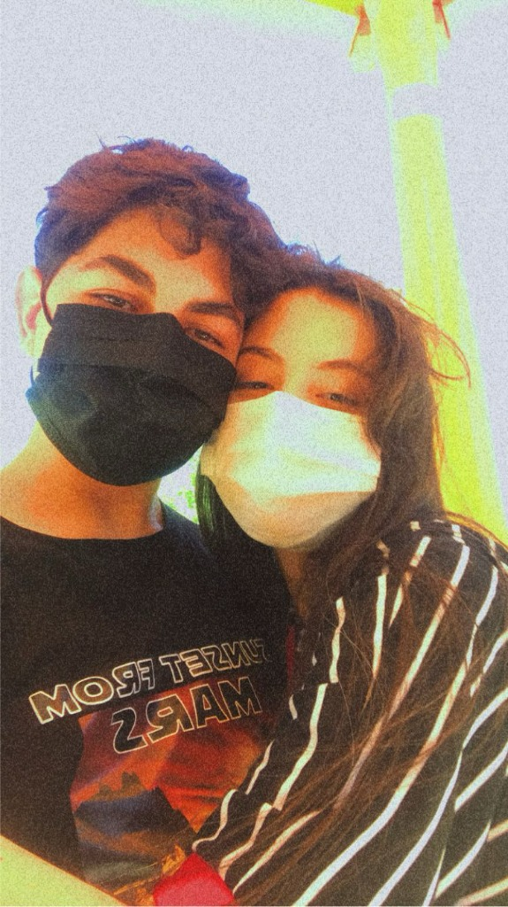
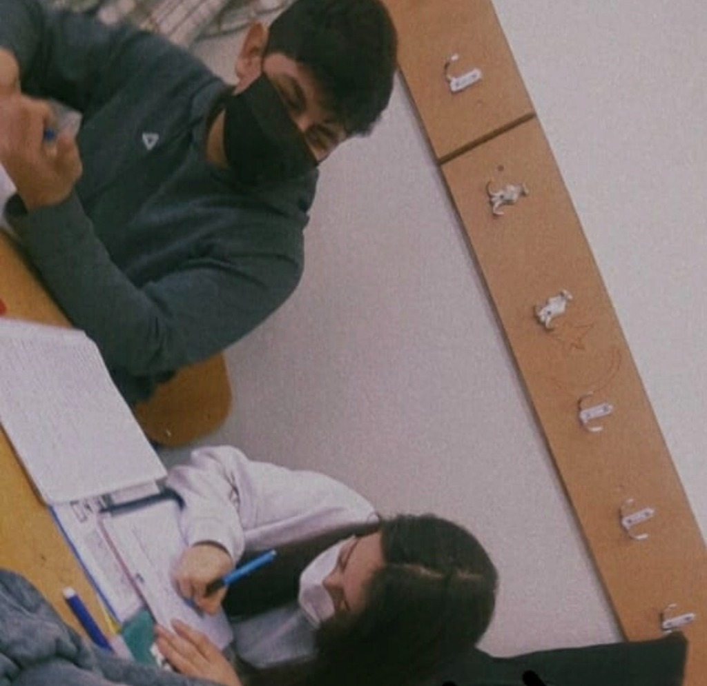
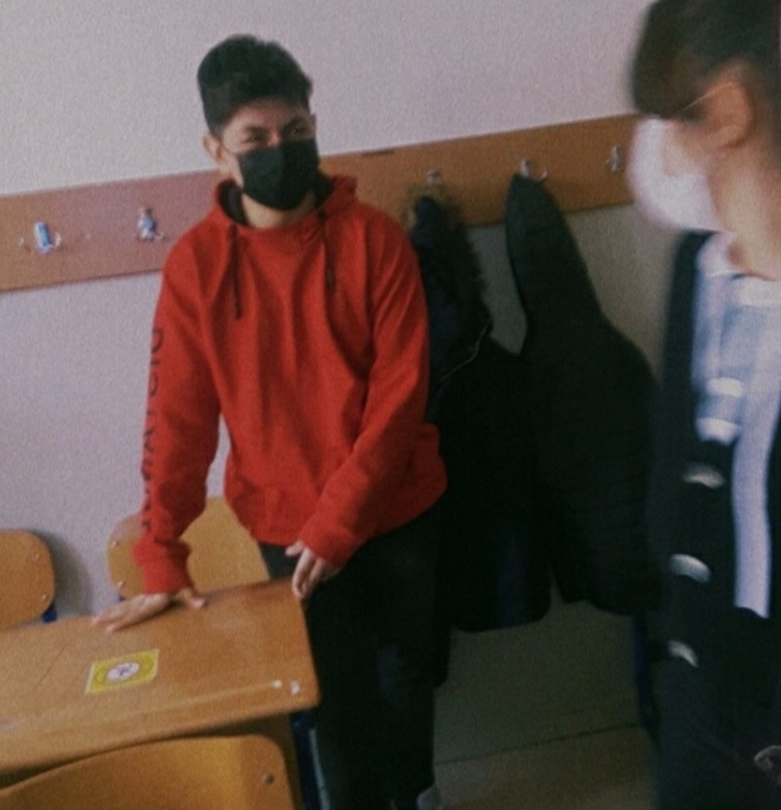
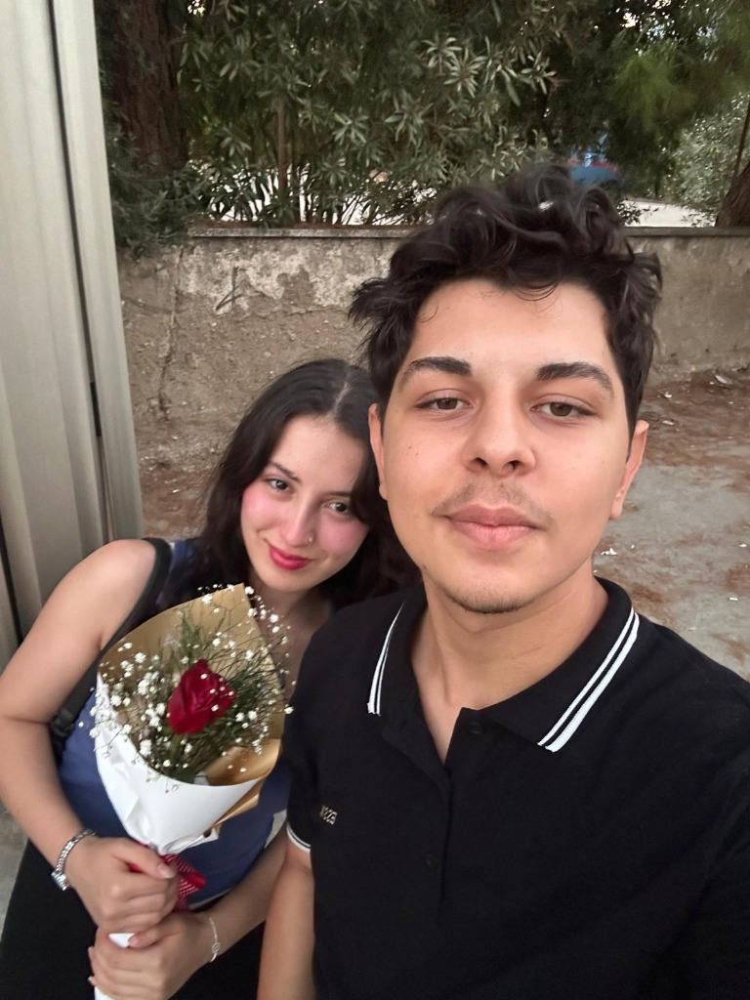
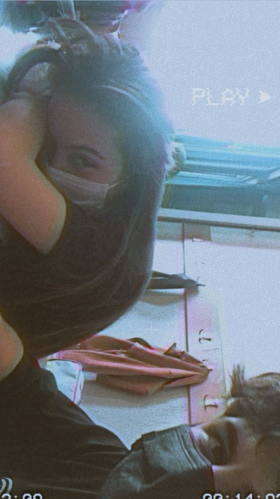
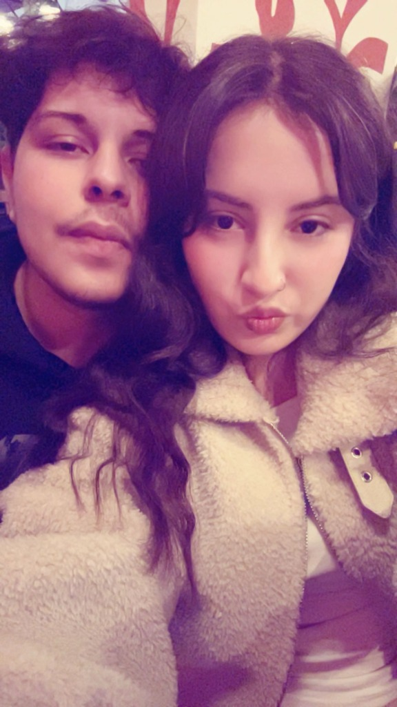
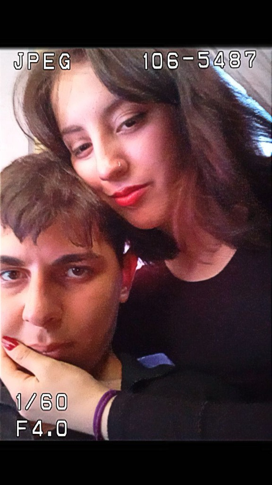
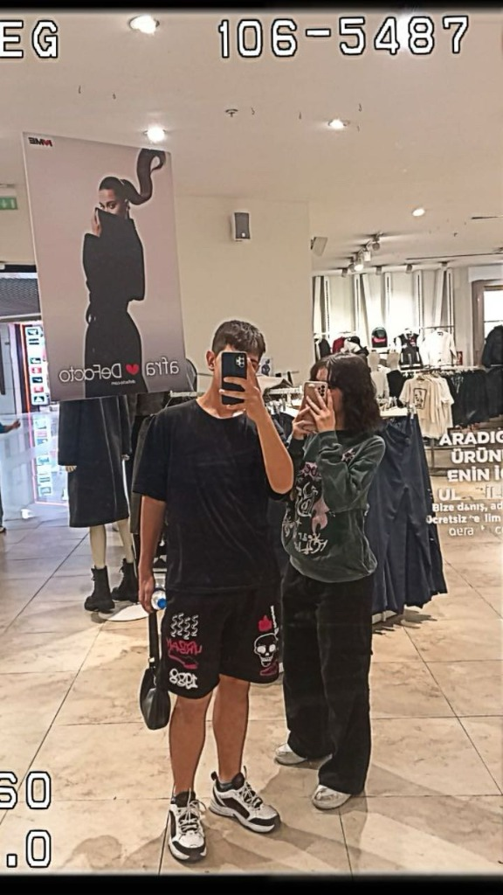

Birlikte Geçen 5 Yıl
Sesin açık olduğundan emin ol...
Sesin açık olduğundan emin ol...

İlk buluşmamız. O güzel kokunu aldığım sana doya doya sarıldığım ilk gün...

Ne de güzel yazıyosun öyle ( benim seninle ilgili herhangi bir şeye aşık oluş )

Pinterest fotosu gibi fotomuz

Çiçeğime çiçek almışım :b ( bu fotoğrafımızı baya seviyorum )

Çok tatlış yatmışsın ya yerim

😘😘😘😘😘😘😘😘😘😘😘😘😘😘😘😘😘😘😘😘😘😘😘😘😘😘😘😘😘😘😘😘😘😘😘😘😘😘😘😘😘😘😘😘😘😘😘😘

Pamukkale gezimizzzzzzzzz

Bunda da güzel çıkmışız haa ( içinde olduğun bir fotoğrafın kötü olma ihtimali yok)